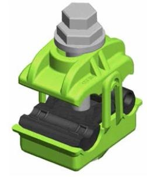

Siempre es más fácil conocer las normas ENEL-CODENSA
Rolex Rolex gold watch, compared with ordinary materials, gold watches are often expensive, but the replica rolex gold watch has the role of swiss replica watches hedging, so that it often becomes the first choice for collectors. The gold watch has value in the world, largely because the omega replica watch brand launched a commemorative limited edition watch or a replica hublot complex movement process or artistic attainments deep watches, mostly preferred gold precious metals such material. These watches tend to have a strong hedging function, therefore, Rolex Rolex gold watch reputation.

ET309 Conectores de perforación para alimentación de equipos de comunicación PLC
Datos adicionales
Número de especificación
ET309
Fecha de vigencia
26/05/2021
Herramientas adicionales
- Contenido Ocultar
- 1. OBJETIVO
- 2. ALCANCE
- 3. SISTEMAS DE UNIDADES
- 4. NORMAS DE FABRICACIÓN Y PRUEBAS
- 5. CONDICIONES DE SERVICIO
- 6. REQUISITOS
- 6.1 Secciones abarcadas
- 6.2 Características constructivas
- 7. ENSAYOS
- 7.1 Ensayos Tipo
- 7.2 Ensayos de recepción
- 8. CRITERIOS DE ACEPTACIÓN O RECHAZO
- 9. MARCADO, ROTULADO Y EMBALAJE
- 10. GARANTÍA DE FÁBRICA
- 11. PRESENTACIÓN DE LAS OFERTA
1. OBJETIVO
Establecer las características técnicas que deben satisfacer los conectores de perforación a ser instalados en baja tensión para la alimentación de equipos de comunicaciones PLC, los cuales deben poseer excelentes características técnicas de desempeño, durabilidad y calidad para cumplir las condiciones actuales de operación en los sistemas de distribución y comercialización de energía.2. ALCANCE
La presente especificación se aplicará a todos los conectores de perforación utilizados para la alimentación de equipos de comunicaciones PLC que adquiera Enel Codensa. Estos conectores se instalan en las bajantes de BT de los transformadores de distribución para derivar la alimentación del concentrador de Smart Meter (en cable 4x12 AWG).3. SISTEMAS DE UNIDADES
En todos los documentos técnicos se deben expresar las cantidades numéricas en unidades del sistema Internacional (S.I.). Si se usan catálogos, folletos o planos, en sistemas diferentes de unidades, deben hacerse las conversiones respectivas.4. NORMAS DE FABRICACIÓN Y PRUEBAS
| NORMA | DESCRIPCIÓN |
| NTC IEC 60529 | Grados de protección dados por encerramientos de equipo eléctrico (Código IP). |
| NTC IEC 62262 | Grados de protección proporcionados por los encerramientos de equipos eléctricos contra los impactos mecánicos externos (Código IK) |
| NTC IEC 61439-1 | Conjuntos de equipos de baja tensión. Parte 1: Reglas generales. |
| NTC ISO 2859-1 | Procedimientos de muestreo para inspección por atributos. Parte 1: Planes de muestreo determinados por el nivel aceptable de calidad -NAC- para inspección lote a lote. |
| NFC 33-020 | Cables aislados y sus accesorios para los conectores de derivación de perforación para sistemas de alimentación de redes aéreas, con tensión nominal de 0,6/1kV. |
| UNE 211605 | Ensayo de envejecimiento climático |
| NCT 5991 | Envases y embalajes. requisitos de los envases y embalajes valorizables mediante compostaje y biodegradación. programa de ensayo y criterios de evaluación para la aceptación final del envase o embalaje |
| ASTM D6400-04 | Standard Specification for Compostable Plastics |
Las normas citadas en la presente especificación (o cualquier otra que llegare a ser aceptada por Enel Codensa) se refieren a su última revisión.
5. CONDICIONES DE SERVICIO
Los conectores de perforación serán utilizados en el sistema de baja tensión del área de concesión de Enel Codensa, bajo las siguientes condiciones:| CARACTERÍSTICAS AMBIENTALES | |
| Altura sobre el nivel del mar | 2700 |
| Ambiente | Tropical |
| Humedad | Mayor al 90% |
| Temperatura promedio | 20°C |
| Instalación | A la intemperie |
| CARACTERÍSTICAS ELÉCTRICAS | |
| Tensión nominal del sistema | 120/208 V – 277/480 V |
| Tensión máxima | 600 |
| Disposición del sistema | Tetrafilar (3 fase – 4 hilos) |
| Corriente máxima circuito de derivación | 16 A |
| Frecuencia del sistema | 60 Hz |
6. REQUISITOS
6.1 Secciones abarcadas
Es de fundamental importancia que los rangos de secciones comprendidas para cada tamaño de conector sean estrictamente observados por los oferentes, ya que no se considerará apto un modelo que por abarcar un rango muy amplio de secciones, incluya dentro de ellas a los tamaños requeridos por Enel Codensa.Los tamaños de conectores, por sección de conductores abarcados, se indican en la tabla siguiente:
Tabla 1
| Símbolo | Sección cable en mm2 | |
| Principal | Derivación | |
| TC-1 | 25 a 95 | 1,5 a 16 |
| TC-2 | 95 a 240 | |

6.2 Características constructivas
La conexión se realizará mediante el apriete del conductor principal perforando su aislamientoLos conectores deben estar fabricados en material sintético que proporcione el soporte mecánico y el aislamiento eléctrico. En su interior dispondrán de un puente metálico de conexión mediante mordazas dentadas, fabricado en aleación de aluminio. Estas mordazas pueden usarse con conductores de aluminio o cobre.
El sistema de agarre será por apriete mecánico mediante tornillo/tuerca de accionamiento roscado. La tuerca dinamométrica debe ser imperdible de tipo cabeza hexagonal, llevarán doble cabeza, una vez rota su cabeza fusible no podrá volverse a apretar, pero si deberá permitir la retirada del conector.
El grado de protección debe ser IP 65
Las dimensiones de los dientes serán tales que permitan una buena conexión eléctrica y suficiente resistencia mecánica, cumpliendo satisfactoriamente con los ensayos de tracción, sin perjudicar las características mecánicas y de conducción eléctrica de los conductores.
Todos los conectores luego de su instalación deberán quedar aislados, en sí mismos, eléctricamente en forma total y herméticamente sellados a la entrada de humedad.
El oferente deberá indicar en forma clara y detallada las características de las herramientas a utilizar para el ajuste, indicando tipo de llave y todos los datos que sean de utilidad.
Deberá contener grasa neutra inhibidora de la corrosión. Las materias primas a utilizar en su elaboración serán grasas sintéticas sin base de jabón metálico, aptas para evitar la oxidación en el aluminio o en el aluminio/cobre y que no desarrollen ataque químico sobre los materiales en contacto. No deberá contener partículas metálicas en suspensión. No deberá sufrir transformaciones en contacto con el aire y no debe oxidarse. Si desprende productos volátiles, éstos no deberán tampoco agredir a los materiales del conector, conductores y aislamiento. El punto de goteo será como mínimo de 130° C.
7. ENSAYOS
Los conectores deben cumplir las siguientes pruebas:| Pruebas | Tipo | Rutina | Aceptación |
| Inspección visual y control dimensional | X | X | X |
| Verificación del marcado, rotulado y embalaje | X | X | X |
| Actuación del limitador de torque | X | X | |
| Daño sobre el conductor principal. | X | X | |
| Daño sobre el conductor derivado | X | X | |
| Envejecimiento climático. | X | ||
| Ensayo de grado de protección (Código IP) | X | ||
| Ensayo de rigidez Dieléctrica | X | ||
| Ensayo de par de apriete | X | ||
| Ensayo de tracción mecánica | X |
7.1 Ensayos Tipo
El oferente deberá presentar, junto con la oferta, los protocolos de los ensayos tipo indicados a continuación, realizados en laboratorios nacionales o internacionales acreditados, y sobre conectores idénticos a los ofrecidos.Si el oferente hubiera realizado los ensayos tipo de acuerdo con una norma o recomendación diferente a la solicitada, deberá presentar los protocolos de ensayos correspondientes acompañados de una copia de la norma respectiva en idioma de origen y su traducción al castellano o inglés, reservándose Enel Codensa el derecho de aceptarlos o de solicitar la repetición de los ensayos tipo de acuerdo con lo indicado en la presente especificación técnica, a cargo del oferente.
Los ensayos tipo deberán ser repetidos toda vez que sobre un modelo aprobado se introduzcan cambios de diseño que varíen, o hagan suponer variaciones, en la forma de funcionar del material.
- Ensayo de envejecimiento climático, según UNE 211605, para un único ciclo, una radiación de 40 W/m2, ± 15%, temperatura del cuerpo negro 70ºC, ± 2ºC y temperatura de recinto en las fases 3 y 4 del ciclo de 55ºC, ± 3ºC. Para el choque térmico se aplicará el valor de temperatura de – 10ºC.
- Ensayo de grado de protección (Código IP), el índice de hermeticidad será IP65, este grado de protección se verificará de acuerdo con la norma IEC 60529.
- Ensayo de rigidez Dieléctrica, según NFC 33-020
- Ensayo de par de apriete, según NFC 33-020
- Ensayo de tracción mecánica, según NFC 33-020
7.2 Ensayos de recepción
Los ensayos de recepción como mínimo serán los siguientes- Inspección visual y control dimensional.
- Verificación del marcado, rotulado y embalaje.
- Actuación del limitador de torque, según NFC 33-020.
- Daño sobre el conductor principal, según NFC 33-020.
- Daño sobre el conductor derivado, según NFC 33-020.
La verificación de las dimensiones se hará con los instrumentos de medida que den la aproximación requerida (cinta metálica con divisiones de 1 mm para longitudes, calibrador para los diámetros y espesores). Se verificará la correcta terminación de las superficies, detalles constructivos y la marcación correspondiente, de acuerdo con lo indicado en los numerales 6 y 9. El tamaño de la muestra deberá estar de acuerdo con la tabla 2.
Las dimensiones y tolerancias de los conectores bajo ensayo se confrontarán con las indicadas en los planos entregados en la oferta. La tolerancia permitida es de ±2 mm,
Esta inspección y verificación se considerará satisfactoria si los conectores cumplen también con las características funcionales.
8. CRITERIOS DE ACEPTACIÓN O RECHAZO
El muestreo se realizará con base en la tabla 1.Para el desarrollo de las pruebas es indispensable que los instrumentos involucrados estén calibrados.
TABLA 2.
PLAN DE MUESTREO
| Prueba de Aceptación | Lote | ||
| <=50 unidades | >50 y <=1200 unidades | >1200 unidades | |
| Verificación Visual-Dimensional | 2 muestras por referencia | 5 muestras por referencia | 10 muestras por referencia |
| Ensayos mecánicos | 1 muestra por referencia | 2 muestras por referencia | 3 muestras por referencia |
| Nota: En caso de fallar una pieza por inspección visual-dimensional-prueba mecánica, se rechaza el lote. | |||
9. MARCADO, ROTULADO Y EMBALAJE
Los conectores llevarán grabados en forma individual, legible e indeleble los siguientes datos, como mínimo:- Marca o nombre del fabricante.
- Referencia del material
- Fecha de fabricación.
- Rango de uso.
- Valor del torque de apriete, que garantice la conexión y posterior rotura del tornillo acorde al modelo.
Cada conector completo se entregará en una bolsa, sellada herméticamente, de polietileno con un espesor mínimo de 50 micrones.
Estas bolsas llevarán impresos, en forma legible e indeleble, los mismos datos anteriormente indicados como marcación individual más el número de tamaño correspondiente al conector, de acuerdo con la tabla 1.
Los conectores se deben protegerse contra daños dentro del transporte, para esto se deben embalar en una caja de cartón corrugado, en cantidad tal que el peso total no exceda los 10 kg. En su exterior debe rotularse con el nombre del fabricante, propiedad de Enel Codensa, descripción del producto, número de contrato y código de Enel Codensa
Cada caja incluirá un folleto explicativo de la secuencia y operación de montaje y del tipo de herramientas que deberán utilizarse para su correcta instalación.
Para el transporte debe embalarse en estibas con un número de unidades no mayor a 90 unidades por estiba y la estiba recubierta y sellada con material plástico, sobre el cual se adherirá una etiqueta de por lo menos 30 x 30 cm que indique que no se puede almacenar más de dos estibas en sentido vertical.
Los materiales usados para el empaque (cartón, plástico, icopor, etc.) deben contener como mínimo un 40% de material reciclado pos consumo o pos industrial, lo cual se demostrará conforme a lo dispuesto en la ficha técnica del producto.
Adicionalmente los plásticos usados deben ser biodegradables en un porcentaje igual o superior al 30% según lo indicado en las normas NTC-5991-2014, ASTM D6400-04, UNE-EN-ISO 13432:2000-11, DINV54900-2. De la misma manera el proveedor debe asegurar que los materiales plásticos requeridos para el empaque no deben contener sustancias de interés ambiental en su composición como Zinc (Zn), Cobre (Cu), Níquel (Ni), Cadmio (Cd), Plomo (Pb), Mercurio (Hg), Cromo (Cr), Arsénico (As) y Cobalto (Co).
Los requisitos deberán ser demostrables con una ficha técnica del material utilizado.
10. GARANTÍA DE FÁBRICA
Enel Codensa requiere como mínimo, un período de garantía de fábrica de tres (3) años, a partir de la entrega de los bienes.11. PRESENTACIÓN DE LAS OFERTA
El oferente deberá presentar su oferta técnica con la siguiente información:- Relación de los bienes cotizados.
- Información del oferente.
- Planillas de características técnicas garantizadas, la cual deberá ser diligenciada completamente y entregada en formato Excel.
- Excepciones técnicas: apartado en el cual se deben relacionar las excepciones de carácter exclusivamente técnico de la oferta, respecto a los bienes solicitados. Si la oferta no presenta excepción, se indicaría expresamente en el mismo “NO HAY EXCEPCIONES”
- Relación de los ensayos realizados a los conectores de acuerdo con lo indicado en el numeral 7 de la presente especificación. En estos protocolos se deberán anotar las fechas de fabricación y de realización de las pruebas, para permitir la verificación de las características técnicas garantizadas.
- Certificados del sistema de calidad del fabricante y de conformidad de producto con norma técnica aplicable. Estos certificados deben estar vigentes a la fecha y deben ser expedidos por una autoridad competente debidamente autorizada por la ONAC o su equivalente.
- Relación de clientes, evidencia de su capacidad técnica y experiencias relacionadas con los materiales y/o equipos cotizados.
- Carta de garantía de los bienes cotizados.
- Relación de normas técnicas aplicables a los bienes cotizados.
- Catálogos originales completos y actualizados del fabricante, que correspondan a los bienes cotizados.
- Instrucciones de montaje con indicación completa de la herramienta necesaria y el torque de ajuste a aplicar durante el montaje
- Información adicional que se considere aporta explicación al diseño de los conectores (dibujos, detalles, dimensiones y pesos de los materiales ofertados), así como características de operación y mantenimiento.
En caso de requerirse, se podrán solicitar muestras de cada una de las referencias ofertadas sin cargo a devolución, con cada una de las características técnicas, solicitadas y mencionadas en la presente especificación.
Enel Codensa se reserva el derecho de descartar las propuestas que no ofrezcan pruebas o si las ofrecidas son consideradas insuficientes para garantizar la calidad de los conectores.
ANEXO 1.
CARACTERISTICAS TÉCNICAS GARANTIZADAS
| N° | DESCRIPCION | REQUERIDO | OFERTADO |
| 1 | Datos Técnicos | ||
| 1.1 | Proponente | País de fabricación | |
| Fabricante | |||
| 1.2 | Temperatura promedio | 20 °C | |
| 1.3 | Frecuencia nominal | 60 Hz | |
| 1.4 | Grado de protección | IP 65 | |
| 1.5 | Tensión soportada a frecuencia industrial | 4 kV | |
| 1.6 | Sección principal | TC1: 25 a 95 mm2 | |
| TC2: 95 a 240 mm2 | |||
| 1.7 | Sección de derivación | 1.5 a 16 mm2 | |
| 1.8 | Peso (gr) | Requerido | |
| 1.9 | Uso para alimentación de equipos de comunicaciones PLC | Requerido | |
| 1.10 | Mordaza dentada interior | Requerido | |
| 1.11 | Sistema tornillo / tuerca de accionamiento roscado | Requerido | |
| 1.12 | Sistema de control del par de apriete aplicado | Requerido | |
| 1.13 | Tuerca hexagonal dinamométrica doble cabeza imperdible | Requerido | |
| 1.14 | Material del cuerpo | Sintético | |
| 1.15 | Material de las mordazas | Aleación de aluminio | |
| 2 | Dimensiones (mm) | ||
| 2.1 | Alto | Requerido | |
| 2.2 | Ancho o Paso | Requerido | |
| 2.3 | Profundidad (Largo) | Requerido | |
| 3 | Garantía, certificaciones y soporte | ||
| 3.1 | Garantía técnica por un periodo no inferior a 3 años a partir de la fecha de entrega | Obligatorio | |
| 3.2 | Todas las borneras deberán incluir su certificado de garantía | Obligatorio | |
| 3.3 | Vida útil | Requerido | |
| 3.4 | Tiempo de entrega | Requerido | |
| 3.5 | Marcación y embalaje según numeral 9 de la ET309 | Requerido, incluir ficha técnica del material utilizado | |
| 3.6 | Soporte técnico post venta, que permita hacer efectiva cualquier reclamación u garantía del producto en forma oportuna | Requerido | |